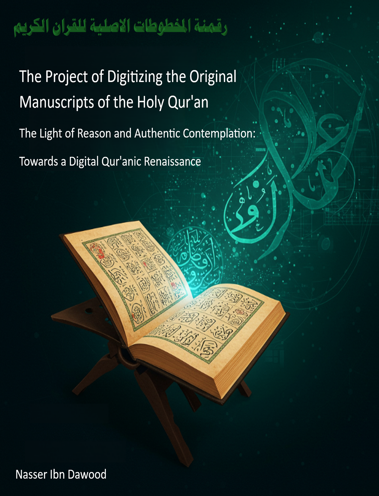

About This Book
What is this project? It's not just a project to digitize old texts; it is: • An Invitation: To rediscover the Holy Qur'an, and to interact with it personally and deeply. • A Journey: To return to the roots, to the Qur'anic text in its form closest to the moment of revelation. • A Bridge: Linking the past and the present, and between tradition and modernity. • A Tool: To enable every Muslim to understand the Book of their Lord, contemplate its verses, and apply them in their life. • A Community: To build a global network of contemplators and researchers, working together to serve the Book of God.
Dr. Nasser bin Dawood presents practical steps to transform Qur'anic recitation into a life-changing practice.